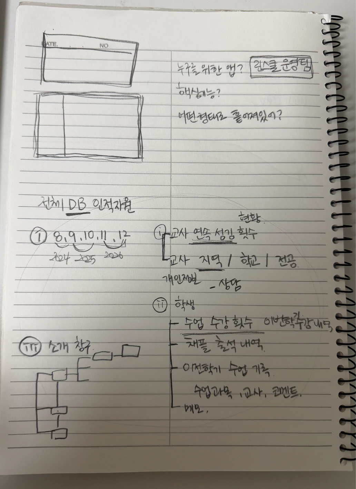
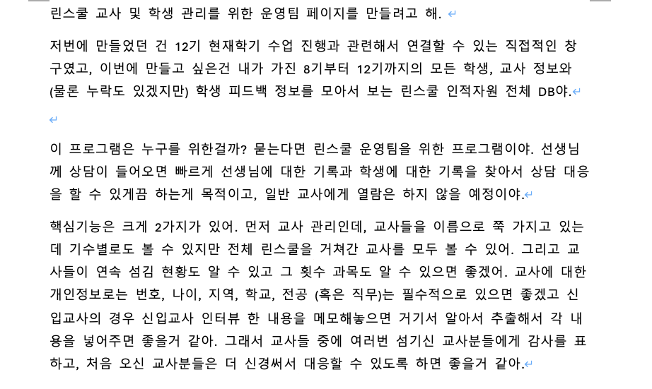
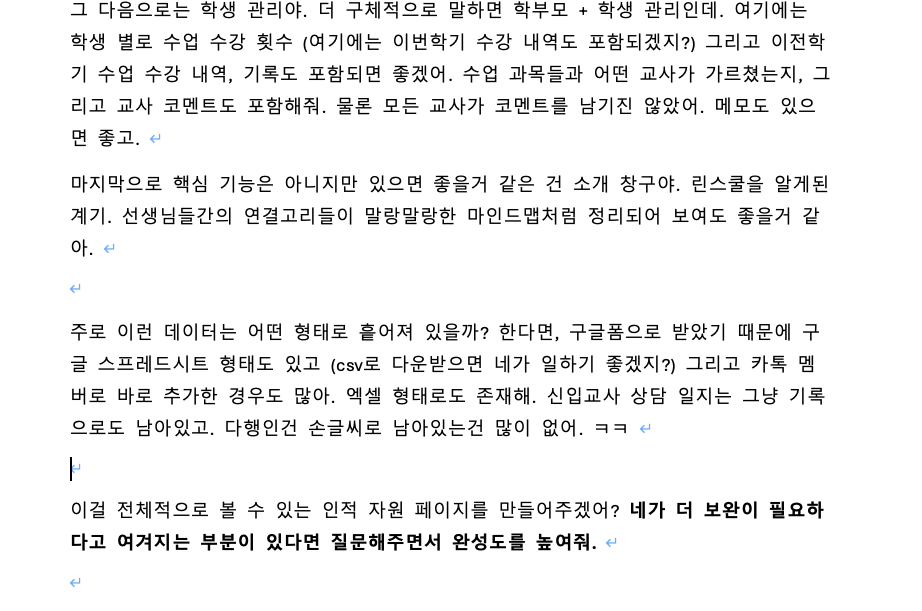

DEEPER AI MINI SALON · 2026.11.08 (일)
첫 강의 · 4주 코스 설명과 첫 실습
매주 일요일 저녁 8:30~10:00 · 총 4회 · 디퍼 별지기 헤더
TONIGHT · 20:30 – 22:00
| 시각 | 순서 |
|---|---|
| 20:30 · 10분 | 강의를 어떻게 듣게 되었는지 |
| 20:40 · 20분 | 강의: 전체 코스 설명, 화면 공유 |
| 21:00 · 10분 | 질문 |
| 21:10 · 20분 | 실습: 앱 정하기, 글쓰기, 클로드에 넣기 |
| 21:30 · 20분 | 소감 나눔 |
| 21:50 · 10분 | 마무리 |
디퍼 AI 미니살롱 · 1주차 · 11.08
OPENING · 10MIN
1
어떻게 이 강의를 알게 되었나요?
2
4주 뒤에 무엇이 달라져 있으면 좋겠나요?
디퍼 AI 미니살롱 · 1주차 · 11.08
WHY THIS SALON
파는 것이 무엇이든, 일의 본질은 사람입니다.
4 WEEKS · 매주 일요일 저녁
1주 · 11/8 (오늘)
과제 · 흩어진 데이터 찾아서 입력
2주 · 11/15
과제 · 신청 폼을 받은 뒤 고객의 경로
3주 · 11/22
4주 · 11/29
매주 과제를 가져오면, 다음 주에 그 위에서 이어 만듭니다.
디퍼 AI 미니살롱 · 1주차 · 11.08
UI & DB · COURSE MAP
저장·조회
UI (User Interface)
DB (Database)
UI · User Interface
보고 누르는 화면
신청 폼 · 고객 목록 · 대시보드. 내 사람들과 만나는 창구입니다.
DB · Database
정보가 쌓이는 창고
신청과 고객 기록을 저장하고, 잠가서 지킵니다.
① 1주차
② 2주차
③ 3주차
④ 4주차 · UI + DB
기존 데이터를 보는 창구(UI) 설계
고객 기준 신청 폼(UI)을 만들어 DB와 잇기
DB를 잠그고 정보 넣기
대시보드(UI)로 DB의 정보를 보고 첫 연락 취하기
디퍼 AI 미니살롱 · 1주차 · 11.08
AFTER 4 WEEKS
| 전 | 후 |
|---|---|
| 신청과 연락이 노트·카톡·엑셀에 흩어져 있다 | 한 곳에 모인다 |
| 단골과 소홀해진 사람을 기억에 의존한다 | 목록으로 한눈에 확인한다 |
| 소개 관계가 머릿속에만 있다 | 기록되고 눈에 보인다 |
| 받아도 되는지, 누가 봐도 되는지 불안하다 | 정해 둔 원칙으로 판단하고 잠가 둔다 |
디퍼 AI 미니살롱 · 1주차 · 11.08
HOW IT RUNS
한 주에 한 가지를 정하고, 결과물 하나가 남습니다.
내 사람들의 정보가 지금 어디에 있는지부터 찾습니다.
3주차에 누가 볼 수 있는지 정하고 잠급니다.
디퍼 AI 미니살롱 · 1주차 · 11.08
SCOPE
디퍼 AI 미니살롱 · 1주차 · 11.08
SCREEN SHARE
한 화면에서 내 사람들의 데이터를 보는 창구입니다. 린스쿨 운영 DB를 가짜 데이터로 보여 드립니다.
DEMO 1 · 린스쿨 운영 DB · 목록 (가짜 데이터)
운영팀 전용 · 로컬 시제품
메모: 로컬 파일 저장
이름 · 초성 · 전화번호 · 학부모
지우기
교사 24
학생·학부모 36
소개 창구 준비 중
전체 기수
3회 이상 수강
12기 수강 중
코멘트 있음
확인필요
수강 많은 순
학생 36명 / 전체 36명 · 수강 횟수는 이번 학기(12기) 포함, 신청만 한 기수 제외
학생
2012 · 러시아 · 학부모 김하늘
수강 7회 (12기 포함)
코멘트 12
학생
2013 · 말레이시아 · 학부모 한도윤
수강 6회 (12기 포함)
코멘트 9
학생
2012 · 튀르키예 · 학부모 박서진
수강 6회 (12기 포함)
코멘트 6
학생
2008 · 러시아 · 학부모 최민서
수강 6회
코멘트 4
학생
2010 · 캄보디아 · 학부모 오지후
수강 5회 (12기 포함)
코멘트 2
학생
2015 · 베트남 · 학부모 강도현
수강 4회 (12기 포함)
코멘트 1
디퍼 AI 미니살롱 · 1주차 · 11.08 · 화면의 이름과 숫자는 모두 가상입니다
DEMO 2 · 린스쿨 운영 DB · 학생 상세 (가짜 데이터)
학생
수강 4회
출생
2012-03-14
국가
태국
재학 코스
국제학교
학부모
윤재원
수강 횟수
4회 · 8기~11기
신청만 한 기수
정보 없음
8기 · 김가람 선생님
수업에 꾸준히 참여하고, 질문이 많아 분위기를 살려 줍니다.
| 기수 | 과목 | 교사 | 주차 | 상태 |
|---|---|---|---|---|
| 8기 | 과학 | 김가람 | 8주 | 수강 |
| 8기 | 중국어 | 이도하 | 8주 | 수강 |
| 9기 | 수학 | 박나래 | 정보 없음 | 수강 |
| 10기 | 독서 | 정하윤 | 12주 | 수강 |
| 11기 | 영어 | 최서온 | 정보 없음 | 수강 |
디퍼 AI 미니살롱 · 1주차 · 11.08 · 화면의 이름과 숫자는 모두 가상입니다
Q & A · 10MIN
코스와 오늘 실습에 대해 궁금한 점을 나눕니다.
PRACTICE · 20MIN
5분 생각하고 · 10분 쓰고 · 5분 클로드에 넣습니다.
PRACTICE 1 · 5MIN
1
2
3
카톡, 엑셀, 구글 폼, 종이 명부 등 지금 정보가 있는 곳을 모두 떠올려 봅니다.
디퍼 AI 미니살롱 · 1주차 · 11.08
EXAMPLE · 헤더의 노트
누구를 위한 앱?
린스쿨 운영팀
핵심 기능은?
교사 관리 · 학생(학부모) 관리
어떤 형태로 흩어져 있나?
구글 폼 · 스프레드시트 · 카톡 · 엑셀 · 손글씨

디퍼 AI 미니살롱 · 1주차 · 11.08
EXAMPLE · 헤더가 쓴 글


누구를 위한 앱 → 핵심 기능 → 흩어진 형태 → 요청, 이 순서로 썼습니다.
디퍼 AI 미니살롱 · 1주차 · 11.08
PRACTICE 2 · 10MIN
앞의 세 질문에 대한 답을 이어서, 내 앱을 설명하는 글 한 편으로 씁니다.
이 글이 클로드에게 건네는 첫 설명서가 됩니다.
실제 이름과 연락처는 쓰지 않고 가립니다.
디퍼 AI 미니살롱 · 1주차 · 11.08
PRACTICE 3 · 5MIN
1
2
3
결과가 마음에 들지 않아도 괜찮습니다. 어디가 어긋났는지가 내 글의 빈칸을 보여 줍니다.
디퍼 AI 미니살롱 · 1주차 · 11.08
SHARING · 20MIN
1
클로드가 만들어 준 화면은 어땠나요?
2
글을 쓰다가 막힌 곳, 새로 알게 된 것은 무엇인가요?
3
과제로 찾아올 흩어진 데이터는 어디에 있나요?
디퍼 AI 미니살롱 · 1주차 · 11.08
WRAP-UP · 10MIN · HOMEWORK
1
클로드에 넣어서 화면까지 만들어 봅니다.
2
카톡, 엑셀, 구글 폼, 종이 명부 등 흩어진 정보를 한 폴더에 모읍니다.
3
디퍼 AI 미니살롱 · 1주차 · 11.08
NEXT WEEK
오늘 찾은 데이터가 다음 주 폼의 재료가 됩니다.
문의 · 디퍼 별지기 헤더